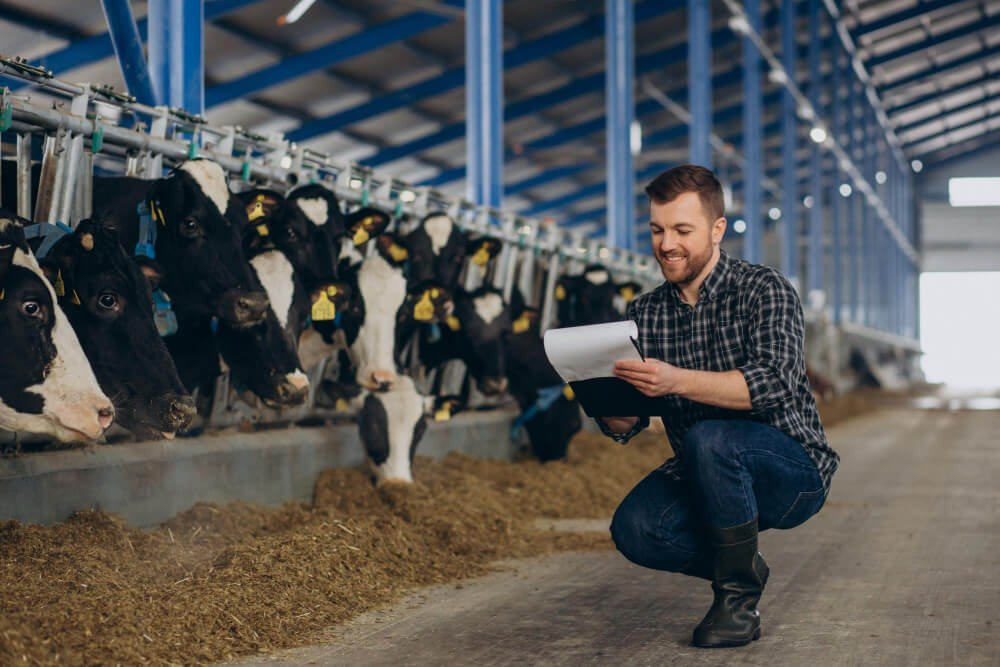
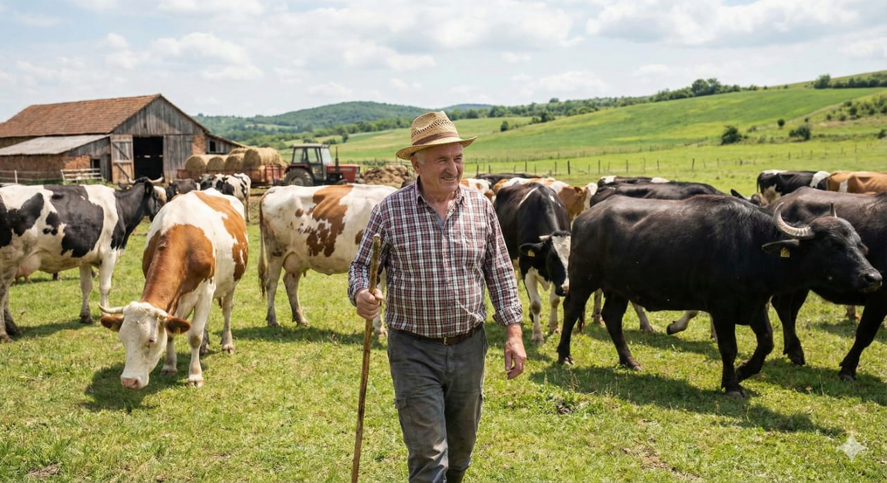
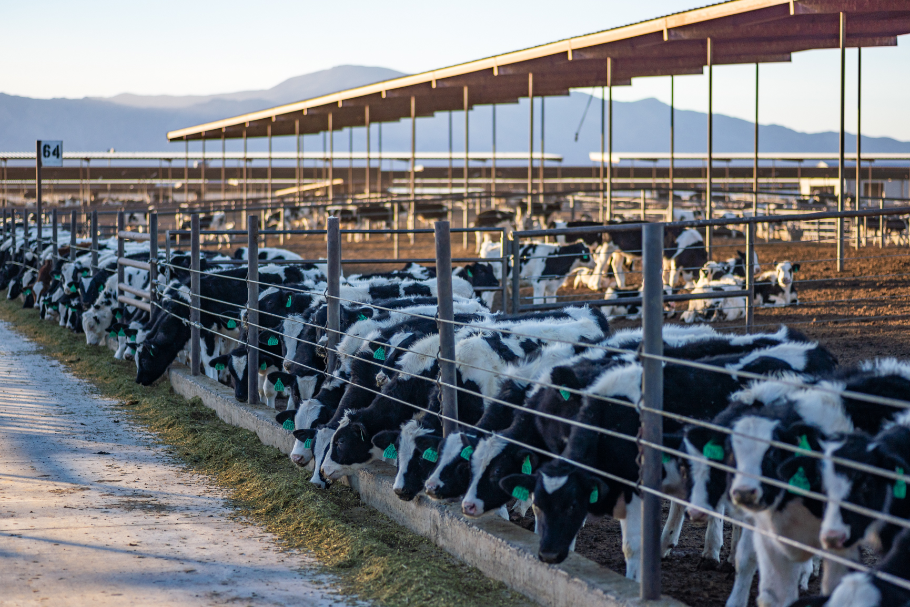
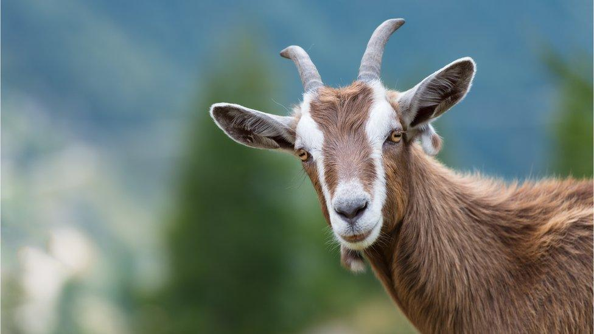
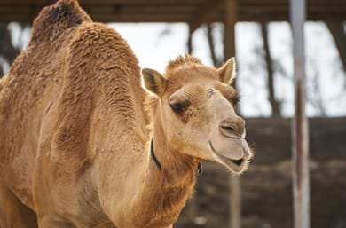

about different dairy farm animals, their nature & benefits
• Cows produce high-quality milk and are easy to manage. They require regular feeding, drinking water, and health checkups.
• Cows are the most prevalent dairy animal globally, with many breed.
Dairy cows are cattle specifically bred for high-volume milk production. While a natural lifespan can reach 20 years, commercial dairy cows are often culled by age 5 or 6 as their productivity declines.

• Buffaloes are strong animals and give thick milk with high fat. They need proper shelter & green fodder.
• High Fat Content: Contains 6–8.5% fat, nearly double that of most cows (3–4%).
• Protein & Solids: Contains 10–12% more protein (specifically A2 beta-casein) and higher Total Solids (16–17% vs. 12% in cows), leading to a much higher yield of ghee, paneer, and curd.

• Goat milk has unique properties that distinguish it from cow or buffalo milk:
• It has smaller fat globules and a softer curd, making it easier for infants and the elderly to digest.
• Hypoallergenic: Contains less alpha-s1-casein, a common trigger for cow milk allergies.
• Health: Regular deworming (every 2-3 months) and vaccinations (e.g., for PPR and Goatpox) are essential to prevent herd loss.

• Camel milk is chemically more similar to human milk than cow's milk, making it a "superfood" alternative for sensitive populations.
• It lacks beta-lactoglobulin, the main allergen in cow's milk, and contains smaller fat globules for easier digestion.
• It contains 3 to 10 times more Vitamin C and significantly higher iron and zinc levels than cow's milk.
• It is often discussed for supporting people with diabetes due to insulin-like proteins.

Milk yield ranges from 1200-1800 kgs per lactation.
The average milk yield of this breed is between 1400 and 2500 kgs per lactation.
Average milk yield is 4500 kgs per lactation.
The average milk production of cow is 6000 to 7000 kgs per lactation.
Milk yield ranges from 1250 to 1800 kgs per lactation.
Average milk yield is 5000 kgs per lactation.
Butter fat content is 7.83%. Average lactation yield is varying from 1500 to 2500 kgs per lactation.
The average milk yield is 1000 to 1200 kgs per lactation.
The milk yield ranges from 1000 to 1300 kgs per lactation.
The milk yield is 1200-1500 kgs per lactation.
The average milk yield is 500 kgs per lactation with high fat content of 8%.
The milk yield ranges from 700 to 1200 kgs per lactation.
Give balanced diet: green fodder + dry fodder + mineral mixture.
Animals must drink fresh, clean water at least 5–6 times a day.
Keep their shed clean, dry & well-ventilated to avoid diseases.
Vaccination, deworming and routine checkups are very important.
Maintain proper records of milk, feed, health & sales.